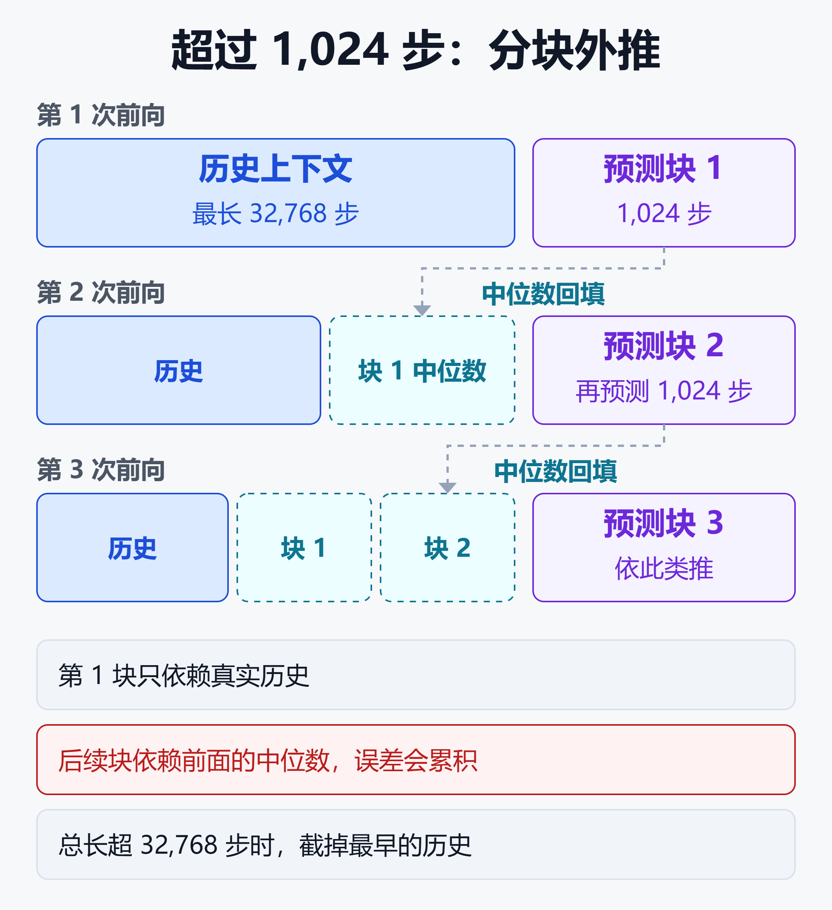
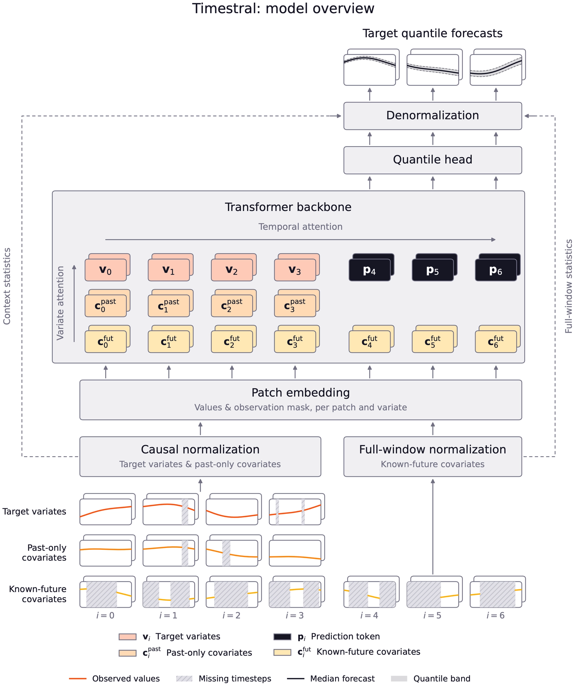
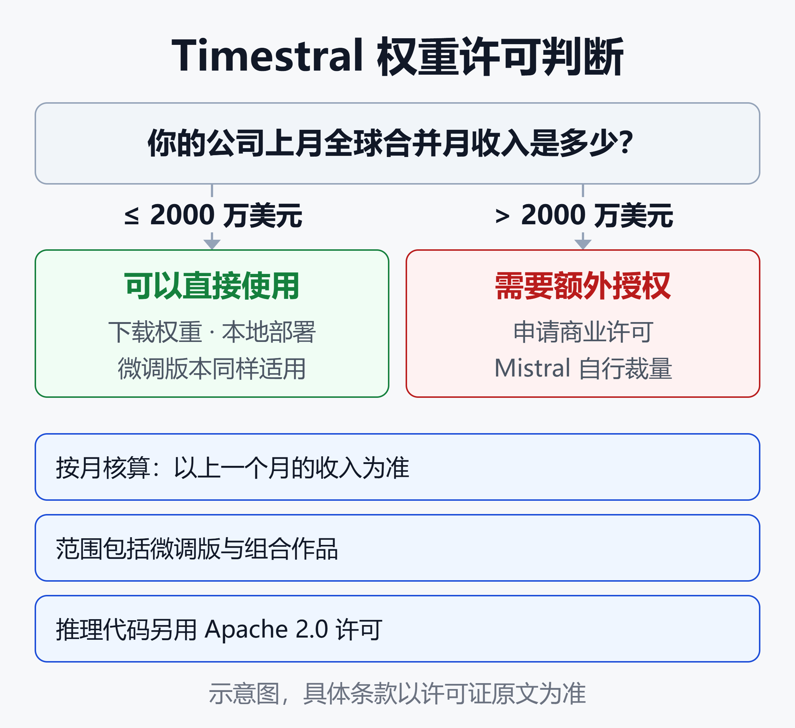

Mistral 发布 Timestral：209M 参数、CPU 可跑，拿下三大预测榜单第一
一个 837MB 的权重文件，在普通服务器 CPU 的 8 个线程上，读入 3 周、每 15 分钟一个点的历史，预测未来一天，耗时约 140 毫秒。
这是 Mistral 在 2026 年 10 月 15 日发布的 Timestral 里，参数最多的一档（209M）。最小的 5M 版本约 10 毫秒，权重只有约 21MB。四个模型都不需要 GPU。
Mistral 的说法是：209M 版本在 GIFT-Eval、TIME、fev-bench 三个主流公开预测榜单上，位列预训练零样本模型第一，而且是单一检查点、不做集成（Mistral 官方博客：Introducing Timestral）。
但同一张成绩表也显示：在 GIFT-Eval 的 MASE 指标上，它只比第二名 t0-gamma 好 0.003（0.658 对 0.661）。所有数字都来自 Mistral 自己，技术报告还没发布。权重的许可证还带着一道门槛：公司上月全球合并月收入超过 2000 万美元，就无权按该许可证使用。
本文按「它是什么、有什么不同、成绩有多可信、谁能用、怎么试」的顺序，把这次发布拆开来看。
时间序列基础模型是什么
预测库存、电力负荷或服务器流量，传统做法是给每条序列单独拟合 ARIMA、线性回归之类的模型，只从这一条序列的历史里学习。
PatchTST 这类深度学习模型能跨多条相关序列学到非线性规律，但通常仍要在每个数据集上从头训练，学到的东西带不到新领域（Mistral 官方博客的概括）。
时间序列基础模型（TSFM）把大语言模型的思路搬了过来：在大规模、多领域的数据上预训练一次，之后对没见过的序列直接预测，不需要在你的数据上再训练。这种用法叫零样本预测。
Timestral 是 Mistral 的第一个这类模型。这家以语言模型闻名的法国公司，这次发布的是一个不写字、只读数字的模型。同类竞品包括 Google 的 TimesFM-3（330M 参数，2026 年 8 月 31 日发布），以及榜单上的 t0-gamma、Toto-2.0-2.5B、Chronos-2 等（Google Research：TimesFM-3）。
四档规模，同一套配方
Timestral 有 5M、28M、123M、209M 四个版本，共用同一架构和训练配方。
| 模型 | fp32 体积 | GIFT-Eval MASE↓ |
|---|---|---|
| Timestral-5M | 21MB | 0.705 |
| Timestral-28M | 111MB | 0.678 |
| Timestral-123M | 490MB | 0.659 |
| Timestral-209M | 837MB | 0.658 |
体积来自项目 README（经 DEV Community 文章转述），MASE 来自 Hugging Face 模型卡。MASE 衡量点预测相对朴素基线的误差，越低越好。
速度方面，官方给出的测试条件是：8 线程服务器 CPU，用 3 周的 15 分钟历史预测未来一天。
- 5M 约 10 毫秒，209M 约 140 毫秒。
- 28M 比 209M 快约 5 倍。
- 123M 的分数与 209M 相差在 0.2% 以内，延迟约为其四分之三。
这组数字说明：从 123M 到 209M，精度几乎没有提升，延迟却多了三分之一。选型时可以先从 28M 或 123M 试起，再决定要不要上最大的。
官方还称，28M 版在 GIFT-Eval 和 TIME 上超过了体量约为其 4 倍的 Chronos-2（MASE 分别是 0.678 对 0.698、0.638 对 0.662）。不过 28M 在 GIFT-Eval 上仍落后于 TimesFM-3 和 t0-gamma。
它吃什么，吐什么
Timestral 的输入不只是一条曲线。它可以同时接收多条目标序列，以及两类协变量；输出是 21 个分位数组成的区间带，而不是一条线。
具体来说：
- 目标序列：一条或多条相关序列，模型联合预测。比如一台泵的振动、温度和压力，彼此有关联。
- 仅过去的协变量：只知道历史值的辅助数据。
- 已知未来的协变量：未来已经确定的信息，如节假日、促销计划、生产排程、天气预报。
- 类别协变量：如星期几、设备状态（运行、空闲、维护）。模型卡说明，类别协变量按目标编码处理。
- 缺失值：用 NaN 标记。
输出是 21 个分位数，从 0.01 到 0.99。有了区间带，就能按风险设报警阈值、安排维护，而不是只盯着一个点。
官方列出的边界也要留意：
- 历史最长 32,768 步，超出的部分会被截掉，保留最近的。
- 单次前向最多预测 1,024 步。更长的预测按块进行，每块的中位数会被追加进上下文，作为下一块的输入。
- 协变量只用来约束预测，本身不会被预测。

这张图的结论是：第 1 块预测只依赖真实历史；从第 2 块起，前面各块的中位数被当作历史回填进上下文，远端预测建立在前面的猜测之上，误差会逐块累积。总长度超过 32,768 步时，最早的历史会被截掉。
这一机制来自模型卡和 README 的说明，具体累积多少，需要在自己的数据上验证。
技术上有什么不同
Mistral 在博客里披露了四个设计点，细节留给尚未发布的技术报告。先看整体结构。

图片来源：Mistral AI —— Introducing Timestral（官方博客）
这张官方总览图自下而上是数据的流向：
- 两种归一化：目标序列和过去协变量用因果归一化，只用到当前位置之前的数据；未来协变量整个窗口已知，用全窗口归一化。
- 分块嵌入：每条序列按 32 步切块，每块的数值和缺失掩码一起嵌入成一个 token。
- 预测 token：在目标序列待预测的位置放入可学习的预测 token，历史块原样保留。过去协变量在未来段没有值，未来协变量则一直延伸到预测段。
- Transformer 主干：包含时间注意力和变量间注意力，信息只能从协变量流向目标。209M 版有 24 层，嵌入维度 768。
- 输出：分位数头给出预测，再反归一化回原始量纲，得到目标序列的 21 个分位数。
下面四个设计点，都能在这张图里找到对应位置。
一、解耦预测视野（DHF）
据 Mistral 描述，Toto 2.0 和 TimesFM-3 这类因果解码器，训练时用连续分块遮蔽：待预测的值被遮掉，看起来像缺失值，也无法再作为后续预测的上下文。
Timestral 的做法是把两者分开：完整历史保留在序列里，由可学习的预测 token 去读取它前面的历史。这样每个观测值既是目标也是上下文，真正的缺口仍被标记为缺失，训练的预测长度和缺失值增强也能分别调节。
二、协变量感知注意力
每条输入序列被赋予一个角色：目标、仅过去协变量、已知未来协变量。已知未来协变量在整个窗口可见，目标保持因果，信息只从协变量流向目标。
好处是可以用节假日表或天气预报，又不会把目标自己的未来泄露给预测。
三、合成数据优先
训练数据以合成为主。先生成带趋势、季节性和多种噪声的单变量过程，再用多变量合成器在这些过程之间加入非线性依赖。
四、两阶段训练
第一阶段只用合成数据，以 8192 的上下文长度大规模预训练。第二阶段混入真实数据，上下文长度扩到 4 倍。训练目标是覆盖 21 个分位数的 pinball 损失，它是 CRPS 的离散近似。
这四点各自贡献多少，官方尚未给出消融结果，要等技术报告。
榜单成绩：第一，但差距很小
下表是模型卡上 Timestral-209M 与第二名 t0-gamma 的对比。MASE 和 CRPS 越低越好，fev-bench 的技能分越高越好。
| 指标 | Timestral-209M | t0-gamma |
|---|---|---|
| GIFT-Eval MASE↓ | 0.658 | 0.661 |
| GIFT-Eval CRPS↓ | 0.446 | 0.452 |
| TIME MASE↓ | 0.626 | 0.637 |
| TIME CRPS↓ | 0.522 | 0.534 |
| fev-bench SQL↑ | 50.39 | 49.42 |
同一张模型卡上，TimesFM-3 的五项分别是 0.667、0.456、0.640、0.536、48.99；Chronos-2 是 0.698、0.485、0.662、0.556、47.28。
Mistral 的博客还给出了榜单规模：GIFT-Eval 有 83 个可比的预训练零样本条目，TIME 有 35 个，fev-bench 有 37 个。GIFT-Eval 本身覆盖 23 个数据集、14.4 万条序列、约 1.77 亿个数据点（arXiv：GIFT-Eval 基准论文）。
读这张表有三点要注意：
- 领先幅度小：GIFT-Eval 的 MASE 只领先第二名 0.003；fev-bench 的 SQL 技能分比 TimesFM-3 高约 1.4 分。
- 数据全是自报：表中数字来自 Mistral 的模型卡，已提交 GIFT-Eval 和 TIME 榜单，但暂无独立复现。技术报告标注为即将发布。
- 榜单不等于你的数据：公开基准汇总了很多数据集，而你的需求序列有自己的节假日、促销和结构突变。业内媒体 ODSC 的报道也提醒，榜单领先不等于生产表现更好（经 Let's Data Science 转引）。
关于数据泄漏，Mistral 称大部分训练数据是合成的，且「回测的数据在预训练中从未出现」。这缓解了预测基准常见的泄漏担忧，但仍需技术报告来佐证。
另一项独立研究值得参考。一篇 2026 年 10 月的 arXiv 论文在模拟数据上比较了 TimesFM-3 和经典时间序列模型，发现基础模型的稳健性与预测步长有关，在部分步长上，几个基础模型会对水平不变的序列预测出下滑，自动 ARIMA 在其他情形下的最坏误差更小（arXiv：Foundation or Formula?）。该论文早于 Timestral 发布，没有评估它，只能作为「基础模型不必然全面优于经典方法」的旁证。
所以更稳妥的结论是：Timestral 在公开榜单上处于第一梯队，是否更适合你的业务，需要回测。
许可证：能下载，不等于都能用
Timestral 的推理代码在 GitHub 上使用 Apache 2.0 许可。模型权重则单独发布，使用的是 Mistral 所称的 Modified MIT 许可。

这张图的结论是：先看你所在公司上月的全球合并月收入。不超过 2000 万美元，可按许可证使用权重；超过则无权直接使用，需要向 Mistral 申请商业许可，或改用 Mistral 的托管服务。
许可证的授权部分与 MIT 类似：使用、复制、修改、合并、发布、分发、再授权、出售。附加条件是：如果你的公司（或雇主）上一个月的全球合并月收入超过 2000 万美元或等值外币，就无权行使这些权利。2000 万美元的月收入，折合年化约 2.4 亿美元。
几个细节：
- 范围延伸到衍生品：限制覆盖模型本身及其衍生品、修改版和组合作品，所以微调后的版本同样受限。
- 规模对应的是公司，不是团队：5M 的小模型也带着同样的 2000 万美元上限，换小模型绕不过去。
- 按月核算：判断依据是上一个月的收入，接近门槛的公司可能这个月合规、下个月就不合规。
这几条是 DEV Community 文章作者对许可证原文的解读，并声明不是法律意见，正式使用前应以许可证原文和法务意见为准。
超线企业有两条路：向 Mistral 销售团队申请商业许可，Mistral 有权自行决定是否批准；或者使用 Mistral 的托管服务。Mistral 文档把 Timestral 标为 Public Preview，没有公布价格。
企业路径是 Mistral Forge。它支持在专有数据上微调、增加领域协变量等架构扩展、调整训练配比，并可部署在客户自己的硬件上，包括气隙环境。
这里有一个值得注意的错位：最需要气隙、本地部署的大型能源、制造和金融企业，往往也是月收入超过 2000 万美元的企业，它们要先拿到商业许可。这是对两份文件的推论，Mistral 没有这样说过。
对比之下，据 DataNorth 报道，Google 目前把 TimesFM-3 的公开权重限定为非商业、非生产用途。同类模型里，许可证本身就是选型维度之一。
动手试：先回测，再决定
如果公司在 2000 万美元线以下，试用的门槛很低。包没有上 PyPI，要从 GitHub 安装，要求 Python 3.10 以上、torch 2.4 以上：
pip install git+https://github.com/mistralai/timestral.git
下面是容量规划的最小例子：用每小时请求数，预测未来一周（168 小时）：
import numpy as np
from timestral import TimestralForecaster
model = TimestralForecaster.from_pretrained(
"mistralai/Timestral-28M", device="cpu"
)
# 每行一个值：每小时请求数，旧到新
history = np.loadtxt("requests_per_hour.txt")
week = model.forecast(history, prediction_length=168)
print("p50 峰值:", week.median.max())
print("p90 峰值:", week.quantile(0.9).max())
代码调用方式来自模型卡和 README 的示例，已按本文场景改写，未经逐行实测，使用前请对照仓库文档。
上线前建议做这几件事：
- 固定版本：
from_pretrained支持revision参数。模型处于 Public Preview，建议固定到某个提交。 - 离线运行：设置
local_files_only=True或环境变量HF_HUB_OFFLINE=1，只读本地缓存，适合隔离环境。 - 按 p90 配资源：实际负载有一半时间高于中位数，容量规划应参考更高的分位数。
- 自己回测：拿最近一个月以上的真实历史，与现有方法对比后再切换。
- 先看收入线：确认公司月收入低于 2000 万美元，再往下做。
适合什么，要谨慎什么
Mistral 自己举的例子是工业现场：成千上万个设备传感器，需要按生产排程预测、提前发现设备漂移、规划产能和备件。它设想的组合方式是：
- Timestral 持续跑在传感器数据流上，实时发现异常。
- 出现异常后，由 Agent 把信号向量化，与历史故障数据对照。
- Agent 再启动子 Agent，结合维护记录、班组日志、设备手册做根因分析。
- 最终给出带证据的诊断和后续建议，而不只是一条报警。
这是官方描述的组合思路，不是已发布的产品功能。
从模型能力看，比较匹配的场景有：服务器容量规划、可观测性指标、电力和能源负荷、设备传感器、需求预测。这些场景的共同点是数据量大、有明显周期、有已知的未来事件，且对区间比对单点更敏感。
需要谨慎的场景有：
- 超长预测：超过 1,024 步的部分靠分块自回归，远端更不可靠。
- 结构突变：政策变化、新产品上线这类事件，模型无法从历史里学到。
- 大型企业：月收入超线，先解决授权问题。
小结
Timestral 的意义，在于把一个小模型放到了公开榜单的前列，并且不依赖 GPU。四档规模让团队能在延迟和精度之间取舍，多变量、协变量和分位数输出也贴近真实的规划场景。
需要保留的判断有三条：领先幅度很小；数据全部自报，技术报告未发；权重对大型企业有授权门槛。
对符合条件的团队，最务实的做法是：用自己的历史数据，拿 28M 或 123M 与现有方法对比回测，再决定是否值得替换。
免责声明
本文基于截至 2026 年 10 月 21 日的公开资料撰写，仅供技术参考，不构成选型、采购、法律或投资建议。文中的性能、速度和榜单数字均为 Mistral 自报，未经独立复现，实际效果随数据和硬件而变化。许可证条款以 Mistral 官方发布的原文为准，涉及商用请咨询法务。部分信息来自第三方报道，已在正文中标注。
参考来源
- Mistral AI —— Introducing Timestral（官方博客）
- Hugging Face —— mistralai/Timestral-209M 模型卡
- GitHub —— mistralai/timestral
- Let's Data Science —— Mistral's Forecaster Tops Three Leaderboards on a CPU. Big Firms Need a License.
- DEV Community —— Mistral's Timestral Runs on a CPU. Its 'Modified MIT' License Stops at $20M a Month
- MarkTechPost —— Mistral AI Releases Timestral: A 209M Forecasting Model Family That Outperforms Google's TimesFM-3
- Google Research —— TimesFM-3: A zero-shot foundation model for multivariate forecasting
- DataNorth —— Google releases TimesFM-3
- arXiv —— Foundation or Formula? A Simulation-Based Comparison of Google's TimesFM-3 and Classical Time-Series Models
- arXiv —— GIFT-Eval: A Benchmark For General Time Series Forecasting Model Evaluation